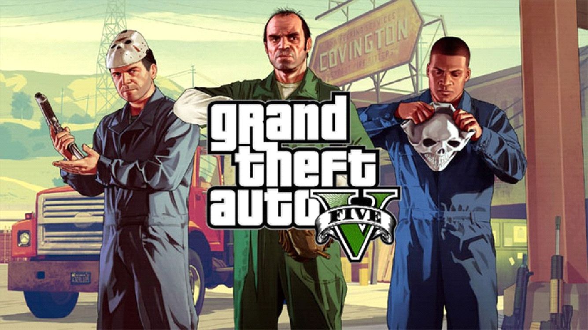

GTA V (2013)

Grand Theft Auto V é um jogo de videogame de ação-aventura desenvolvido pela Rockstar North e publicado pela
Rockstar Games. É o décimo quinto título da série Grand Theft Auto e foi lançado em 2013 para PlayStation 3, Xbox
360 e PC. Em 2014, foi lançado para PlayStation 4 e Xbox One, e em 2015, foi lançado para PC. O jogo é ambientado
em 2013 em Los Santos, uma cidade fictícia baseada em Los Angeles.
O jogo segue a história de três personagens principais: Michael De Santa, um ex-assaltante de banco aposentado;
Franklin Clinton, um jovem membro de gangue que trabalha como motorista de reparação de veículos; e Trevor
Philips, um ex-companheiro de Michael e um traficante de drogas violento e instável. Os três personagens se
envolvem em uma série de conflitos e problemas com outras gangues e figuras do crime em Los Santos enquanto tentam
realizar um último assalto grande.
Como outros títulos da série Grand Theft Auto, GTA V oferece uma jogabilidade aberta que permite ao jogador
explorar a cidade e realizar uma ampla variedade de atividades, incluindo roubar carros, participar de missões de
rápido fogo e cometendo crimes. O jogo também introduziu um sistema de mudança de personagem dinâmico, que permite
ao jogador alternar facilmente entre os três.
GTA 5 foi lançado em 2013 para PS3, XBOX 360, PS4, XBOX ONE, PC, e depois para PS5 e Xbox Series.
|
|
|